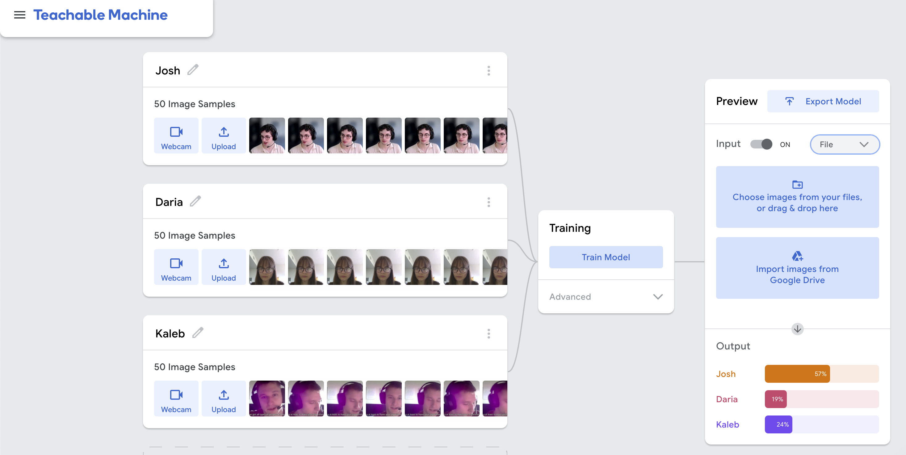

Try Model
Note: must accept browser's request to access your webcam in order to see the model appear.
Project Scope
- Create an algorithm and export it into an API using Google's Teachable Machine.
- Reflect on Joy Buolamwini's book "Unmasking AI" by submitting a project statement.
- Post a video of each of each of us showing the model correctly identifying us.
Classification
This model uses data from our project #1 video introductions as well as each of our respective power discussion videos. Once you allow webcam use and hit start, you will see which of us three group members you most closely resemble!
Range
Each of us three different group members
Person List
Josh, Daria, and Kaleb
Image Samples
Approximately 400 image samples for each classified person
Process
Set up a window using Window's snipping tool around each of our faces in our respective Power Topics Discussion videos and Project #1 - Video Introductions. We then used this window to record our face over a period of ~40 seconds.
We then used another third party software to convert these 40 second videos into a sequence of 400 images which we uploaded to Teachable Machine.
Initially, only content from Project #1 was used, but in order to get a variety of different outfits, lighting, and posture, Power Discussion samples were added.
Lastly this model was integrated into our model.js script and given appropriate css styling to show live results for who the algorithm most believes the subject in front of it looks like.
Lessons Learned
More than anything the prescence of things like glasses, and surprisingly, postures have a huge effect on the algorithm's result.
Some factors are clearly more influential than others such as hair length. Consider that most people I tested this algorithm with with longer hair were instantly likened to Daria by the algorithm.
It seems like there is definitely a fall-off point where further images from one setting have a diminshed effect on the algorithm, at which point having variety in the scene proves much more helpful. Ideally we'd have video samples of each of each group member from many more settings, as two seems a bit too limited.
Video
Project Statement
Our project sought to develop an algorithm using Google’s Teachable Machine to determine which of our three group members—Josh, Daria, or Kaleb—a user in front of a webcam most closely resembles. By training a model on images extracted from videos of our group during collaborative discussions and introductory presentations, we aimed to explore the capabilities and limitations of accessible machine learning tools in facial recognition. This process revealed how seemingly neutral technologies can encode biases tied to physical features, environmental conditions, and systemic inequities, echoing themes central to Joy Buolamwini’s Unmasking AI.
The experiment began with splicing video footage into individual frames to create labeled datasets for each team member. These images were uploaded to Teachable Machine which allowed us to train a neural network used to classify faces in real time through a webcam. The testing exposed immediate patterns: the algorithm disproportionately relied on accessories like glasses and hairstyles rather than subtler facial features. For example, those who try the model with glasses are much more likely to be classified as Josh or Daria. These two group member classifications often compete much more than either does with Kaleb. Furthermore, Daria’s long hair was a prime classifier. This was tested using a different female test subject and with her hair down the model said she looked more like Daria but with her hair up the model thought she looked more like Kaleb. This overemphasis on mutable traits underscored a critical flaw in many facial recognition systems—their tendency to prioritize easily detectable markers over nuanced biological characteristics, which can lead to reductive or unstable classifications. Even though the model does well at recognizing the three of us, in certain environments it can fluctuate before stabilizing because of these mutable traits.
Environmental factors further complicated the model’s accuracy. Variations in lighting emerged as a significant variable: Kaleb’s training data, captured under harsh fluorescent lighting, resulted in poorer performance compared to Daria’s images, which were taken in during the middle of the day with softer lighting more suited to bring out the best quality in a webcam. This discrepancy highlighted how technical limitations, such as inconsistent lighting or low-quality cameras, can skew algorithmic outcomes. This could have real world implications if models are only tested on high quality cameras, lower income areas using the model would not behave in the way that the model was mean to if they don't have access to higher quality cameras and technology. Grainy or poorly lit footage introduced noise that confused the model, particularly for features like facial structure. This was apparent when testing the model with a female test subject where, with her hair down, the model claimed she looked the most like Kaleb, which was likely due to them having lighting conditions similar to Kaleb rather than them having actual facial features similar to Kaleb. Testing different variations with Daria and Josh's cameras would have likely produced similar results.
These discrepancies made in classification highlighted broader societal inequities, such as those who have access to high-quality hardware—often tied to socioeconomic status. While our team shares similar skin tones, even minor shifts in lighting altered the perceived warmth or darkness of our skin in the training data, raising concerns about how datasets might misinterpret skin tone on the basis of different camera temperatures. This resonated with Buolamwini’s research, which exposes how commercial facial analysis systems frequently fail for darker-skinned individuals due to under representation in training data and hardware optimized for lighter skin.
There are also certain limitations noticed with the datasets that we provided, that limits the model's accuracy, robustness, and generalizability. For example, since we used the used frame by frames pictures of each of us from videos recorded for this class, there was no data augmentation included that could have improved the model and made it more robust. Some of these data augmentation techniques that could have been used include flipping, rotating, changing brightness of photos and zooming in and out of the pictures. So without doing this, we noticed that unless the user is in a similar environment as we were in recording, the model struggled and produced inaccurate results. This would have made the model less sensitive to the issues found in the model discussed above like lighting and camera quality, and overall would be better at avoiding over fitting. This highlighted the importance of having a diverse and versatile dataset that covers as wide of a range of different scenarios as possible. This resonated with Buolamwini's research and story, which shows how bias many machine learning models are. We struggled creating a fair model that performed accurately on such a small subset of people, it's easy to see how difficult it would be to create an accurate model incorporating people from all over the world. After creating this model, it's clear the majority of the bias isn't intentional but it's just very difficult to create a model that covers the majority of the possible scenarios, but overtime as more data is collected, the models will improve and become overall less bias.
Overall, this project showed many of the useful applications of machine learning, but also showed the many pitfalls that Buolamwini researched which includes bias of machine learning models specifically in facial recognition with people of color but other bias issues that we touched on such as the model focusing on mutable traits like hair and glasses more than the unchangeable and more uniquely defining traits of a person. This caused us to realize that it's not a big deal for this project if the model isn't diverse and accurate but as Joy Buolamwini points out, when these models are used in the real world, around have serious and detrimental consequences when the model is wrong such as police trying to identify a suspect or military systems wrongly identifying target, which could lead to wrongful arrests or even death. This project also made us agreed with Buolamwini that in the future there models should be transparent in their training sets, and there should be some sort of regulation put into place to ensure safety and accuracy of these models.